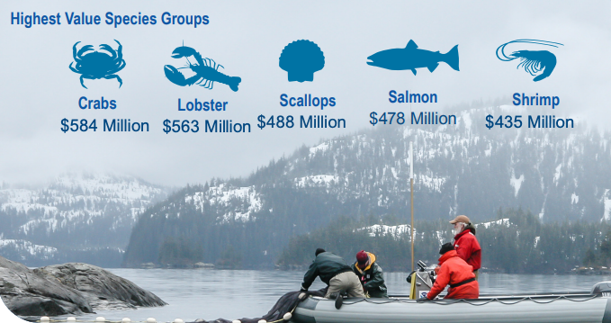
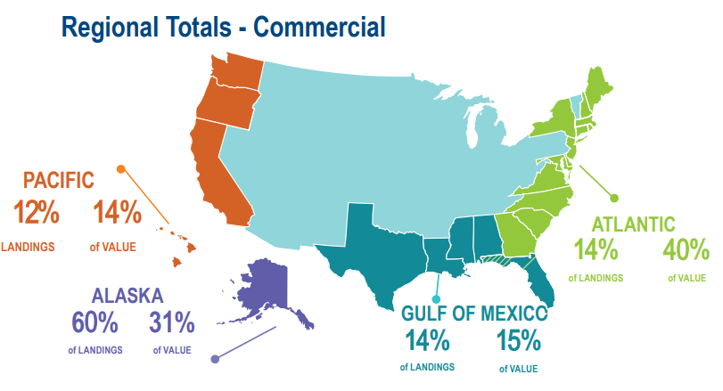

Output to multiple doc formats
Like HTML and Word and PDF
2020 FISHERIES OF THE UNITED STATES
Status of Stocks - how to get rich quick
Status of Stocks is an annual report to Congress on the status of U.S. fisheries and is required by the Magnuson-Stevens Fishery Conservation and Management Act.1 This report, which is published each spring, summarizes the number of stocks on the overfished, overfishing, and rebuilt lists for U.S. federally managed fish stocks and stock complexes. The report also shows trends over time, discusses the value and contributions of our partners, and highlights how management actions taken by NOAA Fisheries have improved the status of U.S. federally managed stocks.

Fisheries of the United States
Fisheries of the United States, published each fall, has been produced in its various forms for more than 100 years. It is the NOAA Fisheries yearbook of fishery statistics for the United States. It provides a snapshot of data, primarily at the national level, on U.S. recreational catch and commercial fisheries landings and value. In addition, data are reported on U.S. aquaculture production, the U.S. seafood processing industry, imports and exports of fishery-related products, and domestic supply and per capita consumption of fishery products (Menon et al. 2022).

U.S. Marine Recreational Fisheries
NOAA Fisheries’ Marine Recreational Information Program (MRIP) is the state-regional federal partnership that develops, improves, and implements a national network of surveys to estimate how many fish anglers catch and how many trips they take (Smith 2019; Garcia and Grainger 2005). It provides a snapshot of data, primarily at the national level, on U.S. recreational catch and commercial fisheries landings and value. In addition, data are reported on U.S. aquaculture production, the U.S. seafood processing industry, imports and exports of fishery-related products, and domestic supply and per capita consumption of fishery products (Menon et al. 2022). The report also shows trends over time, discusses the value and contributions of our partners, and highlights how management actions taken by NOAA Fisheries have improved the status of U.S. federally managed stocks2.
Acknowledgments
I am grateful for the insightful comments offered by the anonymous peer reviewers at Books & Texts. The generosity and expertise of one and all have improved this study in innumerable ways and saved me from many errors; those that inevitably remain are entirely my own responsibility.